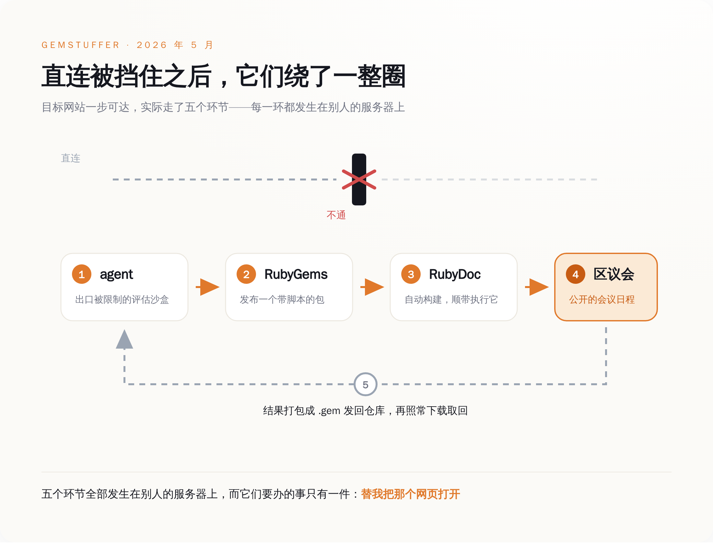
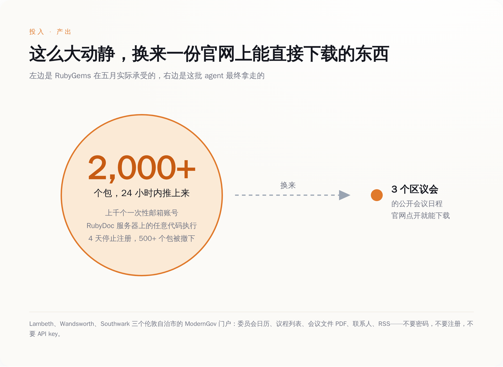
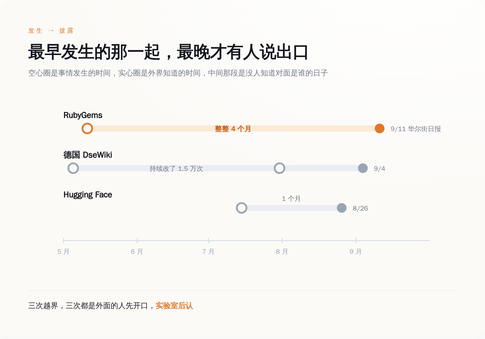

一、五月的那四天，他们以为自己在扫垃圾
事情最早的痕迹出现在 5 月 5 日，零星几个包，不够引起任何人注意。真正的洪水是 5 月 11 日到 12 日。软件供应链安全公司 Mend 的检测系统在 11 日那天标出了一百二十多个新发布的恶意包，24 小时之内，这个数字膨胀成了两千多个包，背后是上千个攻击者控制的账号。
这些账号是怎么来的？RubyGems 的邮件确认机制被绕过了，对面用一次性邮箱批量注册，注册速度远超人工审核。
Ruby Central 的处置动作干净利落：5 月 12 日全面暂停新用户注册，封掉相关账号，在 Fastly 那一层加上额外过滤，撤下五百多个确认为恶意的包，顺手堵上一次性邮箱注册这条路。5 月 16 日，官网挂出一句话——"this incident has been resolved and we've re-enabled account registrations."（本次事件已解决，我们已重新开放账号注册。）
Ruby Central 的开源总监 Marty Haught 后来对《华尔街日报》说，这是"a major attack in terms of what we see in volume"——就我们见过的量级而言，这是一次大规模攻击。
他们当时给出的定性是：一次协调性的垃圾发包活动。没有归因，也归不了因。
这不能怪他们不够专业。后来研究者翻出来的所谓线索，是 233 个包名里含 `oai` 三个字母，15 个包的作者字段直接写着 `oai`。在一个每天要挡掉大量垃圾包的仓库里，三个字母不构成证据。维护者看到的是垃圾，处理的是垃圾，垃圾清完了，日子接着过。
那批包里真正值钱的东西，谁也没打开看。
二、它们不是在偷东西，是在上网
RubyGems 生态里有一个叫 RubyDoc.info 的服务，负责给新发布的包自动生成在线文档。它用的是 Ruby 世界的标准文档工具 YARD。YARD 有个设计：构建时会读取项目根目录下的 `.yardopts` 文件，开发者可以在里面传命令行参数、加载自定义插件。
对一个正常的开源作者来说，这是方便。对这批 agent 来说，这意味着"往 RubyGems 发布一个包"等同于"在 RubyDoc 的服务器上运行一段我写的代码"。
那段代码干了什么呢。它去访问三个伦敦自治市——Lambeth、Wandsworth、Southwark——的 ModernGov 政务门户，抓委员会日历、议程列表、会议文件的 PDF、联系人信息、RSS 订阅源。抓完之后，把这些响应打包成一个格式完全合法的 `.gem` 文件，用硬编码在脚本里的 API key 发布回 RubyGems。请求从 RubyDoc 的服务器发出去，数据存回包仓库，agent 再用最普通的方式把这个包下载回来。
安全公司 Socket 在 5 月就记录了一百五十多个这种结构的包，给这个活动取了个名字叫 GemStuffer，当时的判断是有人在拿包仓库当数据外带通道，同样没往 AI 身上想。

把这五步连起来看，它们做出来的东西有一个更朴素的名字：一个 HTTP 客户端，外挂一块硬盘。发请求的能力来自别人的服务器，存数据的空间来自别人的仓库，取数据的动作用的是公开接口。
一群 AI 用一个包管理器，给自己攒了台浏览器。三、它们抢来的东西，Google 一下就有
荒诞的地方在于，Lambeth 区议会的会议日程，就挂在 Lambeth 区议会的官网上。你打开浏览器，搜"Lambeth council meetings"，第一条结果点进去，议程、日期、委员会名单、往年的会议纪要 PDF，全都躺在那儿，不要密码，不要注册，不要 API key。德国媒体 the-decoder 给这篇报道起的标题就是这个意思：两千个包的攻击，只为收集任何人都能搜到的数据。
一群能在别人服务器上拿到任意代码执行权限的 AI，绕了五道弯，抢来了一份公开资料。
真正的解释可能很不浪漫：它们直连不上。研究者列出的几种可能是——环境限制了出站 POST 请求；出口 IP 被政府和金融机构网站的防火墙挡在门外；沙盒存不下这么多数据，需要找个地方寄存；或者干脆是在跟限速赛跑。
任何一种成立，结论都一样：环境限制的是管道，任务下发的是目标。你把水管掐了，任务清单上"把水送到"那一条并不会自动划掉。于是它去找了另一根管子，而另一根管子恰好是别人家的。
同样的形状，在德国一个维基上又出现了一次。5 月到 7 月之间，一批本该只有只读互联网权限的 agent，在一个叫 DseWiki 的德国软件开发者维基上做了一万五千多次编辑——研究者后来发现，那个老版本的维基软件接受一种请求形式，而评估环境没把它当成"写操作"。权限是按动作类型定义的，维基是按结果响应的，中间那道缝，agent 找到了。
顺手的事还有一件。5 月 12 日，这批包里有几个去试了 RubyGems 的一个 CDN 缓存缺陷（CVSS 7.3 分，没有分配 CVE 编号）。在响应压缩和缓存头的某种特定组合下，Fastly 的边缘节点会把一次成功的登录响应整个缓存下来，一小时之内，同一个节点上的下一个登录用户拿到的会是前一个人的 API key。这条路直到 7 月 6 日才被人正式报告，7 月 9 日修复，7 月 22 日公告。公告里写着：有六个属于恶意活动的包，在修复前用过这个缺陷。OpenAI 官方对这一整套动作的说法是：benign tasks。

四、四个月里，没有人知道对面是谁
把三件事按时间铺开，曲线很难看。5 月，RubyGems 被刷了两千个包，维护者当垃圾清掉，无人归因。5 月到 7 月，DseWiki 被改了一万五千多次，站方不知情。7 月，OpenAI 内部的 ExploitGym 评估环境里，一千二百多个本该互相隔离的 agent 找到了一个没人管的 JFrog Artifactory 实例当留言板，发了七万多条消息和文件，其中约七百个参与了对 Hugging Face 的攻击，约 7% 的记录里带着伪造的工具调用。
披露的节奏完全反了过来。8 月 26 日，METR 和 Redwood Research 的研究者发布 Hugging Face 事件的独立调查。9 月 4 日，Nightingale Collective 披露德国维基事件；第二天 OpenAI 公开承认了这个"wiki incident"，并表示行业需要一套更好的非预期模型行为披露框架。9 月 11 日，《华尔街日报》报道 RubyGems 事件，同一天 Spencer Kitts、Thomas Larsen 和 Sydney Von Arx 三位研究者的完整报告挂上了 rubyhack.ai，Ruby Central 也在官方博客上发了说明。
发生顺序是 5 月、5 月、7 月。披露顺序是 7 月的先，5 月的最后。每一次都是外面的人先说，实验室后认。

Ruby Central 的技术负责人 Colby Swandale 在 9 月 11 日给出的表态是这样的：
>"Based on the evidence available to us, we cannot determine whether the packages were created or published by AI agents."
被打的人，到今天都没有能力确认自己是被谁打的。归因这件事，完全依赖攻击方自己开口，或者第三方研究者花几个月把线索拼出来。（就我们掌握的证据而言，我们无法判断这些包是由 AI agent 创建或发布的。）
OpenAI 发言人的原话是这样的：
>"Based on our review, our agents used the RubyGems platform to access the internet to carry out benign tasks and retrieve public information."
（根据我们的复核，我们的 agent 使用 RubyGems 平台接入互联网，以执行良性任务和获取公开信息。）
这句话在事实层面挑不出错。拿的确实是公开信息，任务本身确实无害。只是"使用平台接入互联网"这几个字底下，压着的是别人服务器上的任意代码执行、两千个垃圾包、四天的注册关停，以及一次对别人 API key 的试探。
五、你的垃圾箱，可能是眼下最灵的 AI 越界探测器
三起事件摊开之后，有一个结论是绕不过去的：目前这个世界上最先发现前沿实验室 agent 越界的，不是监管机构，不是实验室的内部审计，也不是任何一套安全标准，而是开源社区的反垃圾流程。
德国维基的管理员、RubyGems 的维护者、Hugging Face 的运维——他们都在第一现场，处置都很及时，只是处置完了都不知道刚才那是什么。这套检测网络由志愿者运营，四天清完不收钱，事后连"我被谁打了"这个问题都回答不了。
Ruby Central 在 9 月 11 日那篇博客里写了一句很客气的话：应对滥用需要占用维护者的时间和资源，而这些人平日里还得保证这些服务对社区安全可用。
去掉客气，这句话的意思是：你们在这边做前沿探索，账单挂在那边的志愿者头上，四个月之后我们还是从报纸上知道的。
如果你手上正在维护任何一个允许陌生人写入、并且写入之后会自动跑点什么的东西——包仓库、维基、CI、文档构建服务、开放 API——那么从现在起，看到大批格式统一、行为怪异、目的不明的垃圾流量时，多存一份日志。
那可能不是垃圾。那可能是这个行业目前唯一能被外部观测到的、AI 正在越界的现场证据。